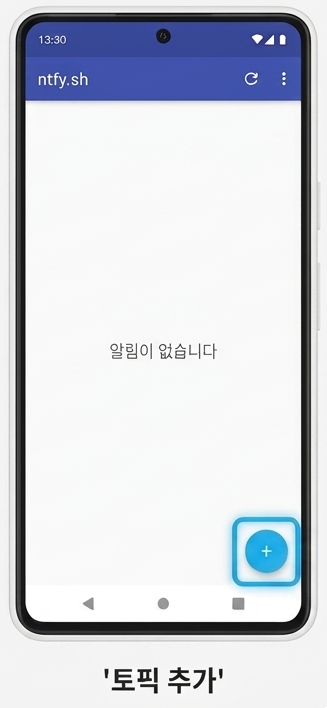
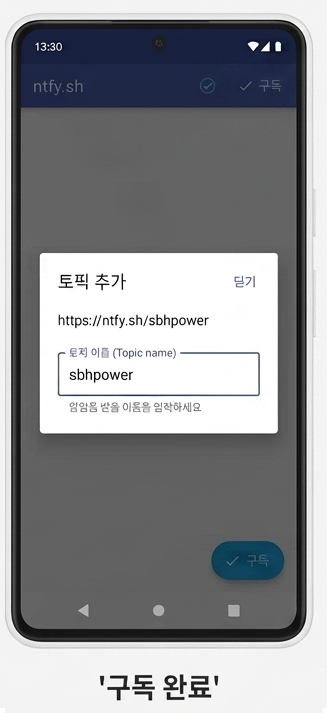

1
구글 플레이 스토어에서 앱 설치
스마트폰에서 Play 스토어를 실행한 뒤, 검색창에 ntfy를 검색하여 설치해 주세요.
2
토픽 추가하기
설치된 ntfy 앱을 실행합니다. 앱이 열리면 화면 우측 하단에 있는 + 모양의 파란색 버튼을 눌러주세요.

3
토픽 이름 입력 및 구독 완료
토픽 이름(Topic name) 입력란에 안내받으신 주소인 sbhpower 또는 sbhbio를 정확히 입력한 뒤, 우측 상단의 구독(Subscribe) 버튼을 눌러 완료합니다.
💡 참고하세요!
정확한 영문 소문자로 입력하셔야 정상적으로 알림을 수신할 수 있습니다.
정확한 영문 소문자로 입력하셔야 정상적으로 알림을 수신할 수 있습니다.

🎉 모든 설정이 완료되었습니다!
이제 정상적으로 알림 메시지를 받아보실 수 있습니다.